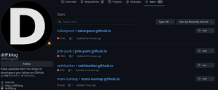

 The other day I was found by diff.blog who starred the repository for this website on Github. While poking around their bot's Github account I found that the diffblogbot stars page is a huge mine for random personal websites scattered around Github. diffblogbot crawls for blogs and gathers them all here, in one place. I decided to take a look at some of them, and gather a few of the most interesting in a kind of showcase.
{kind=link}
Mocha2007's personal website has a ton of interesting stuff: conlangs, games, toy programs, and more! Their conlangs and worldbuilding are very detailed, just take a look at the Eremoran Language. Their skillset and interests seem pretty close to mine actually, so this website was a really cool find. (They also have a list of cool & weird sites too!
Then there's SeoulToday/seoultoday.github.io a website that is the a fictional news network for the Roblox Republic Of Korea made by SirCollinHall
. Roxlox Republic of Korea? More likely than you think!
I also found Brian Haggerty's personal website. This is a more straightforward site, a few blog posts, some social media links. One interesting thing I noted is that his second-to-last blog post, in 2010, has him joining Twitter. Now, in 2023, he's moved to Mastodon.
We also have Peter Saint-Andre's personal website. Despite his tech background, his online journal is very philosophical.
Finally we have Alex Hartford's website, very artistic. There's a lot of games, art, films, and music he's built, check it out!
There's just so many cool little sites out on the Internet, how can one ever surf them all? As the Internet's population grows I'm sure there'll be more and more techy people who create these curious corners and carve out their nooks in the web. Maybe I will never see them, but with a little exploration we can all find some interesting people online just as it is in the real world.